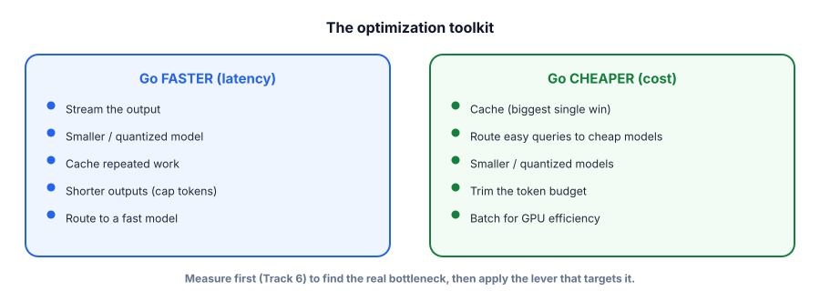

Capstone: a cost & latency-optimized chat service
This project wraps a model in a chat service that is cheap and fast to run.
Repeated questions are answered from a cache: a store of answers already given.
Easy messages go to a small, fast model and hard ones to a bigger model. That is called routing.
Old chat turns are trimmed, answers stream word by word, and output length is capped.
The service counts cache hits, routing and latency, so you can prove each trick saves something.
Picture a busy coffee shop. The most common orders sit ready on the counter. Simple orders go to the junior barista, tricky ones to the head barista. Every customer gets the first sip straight away, cups have a size limit, and at closing time someone counts how many of each happened.
| In the picture | In the real system |
|---|---|
| Orders ready on the counter | The cache: an identical message returns the saved answer |
| Junior and head barista | Routing: qwen2.5:1.5b for easy, qwen2.5:7b for hard |
| The first sip straight away | Streaming tokens as they are written |
| The cup size limit | num_predict: 400 and keeping the last 6 messages |
| Counting at closing time | report(): hit rate, routing split, average latency |
Where the picture breaks. A ready coffee is the same as a fresh one. A cached answer can be out of date, and with a semantic cache (reusing answers for similar questions) it can be wrong for a question that only looks the same.
chat_service.py.If this service ran on the Claude API, what would 1,000 chats cost? Move the prompt-cache hit rate and the share routed to the small model. Prices are real; token counts are illustrative.
Going deeper
The final project: a production-style chat service that wraps an LLM with the serving levers from Track 8 — caching, routing, streaming, token budgeting — and measures the savings. It’s the difference between a demo and something you could actually run at scale, and it completes your end-to-end engineer’s toolkit.
What you’re building
A chat service that, for each request: checks a cache, routes easy queries to a small model and hard ones to a bigger one, trims the prompt to a token budget, streams the response, and records cost and latency metrics so you can prove the optimizations work. Free and local via Ollama (a small and a larger model).

$ pip install ollama
$ ollama pull qwen2.5:1.5b # small/fast (cheap path)
$ ollama pull qwen2.5:7b # larger/capable (hard path)The optimized service
import time, ollama
cache = {} # exact cache (Track 8.3)
metrics = {"requests": 0, "cache_hits": 0, "small": 0, "big": 0, "latency": []}
def route(msg): # model routing (Track 8.4)
hard = any(w in msg.lower() for w in ["analyze", "explain why", "design", "prove", "compare"])
return "qwen2.5:7b" if hard or len(msg) > 300 else "qwen2.5:1.5b"
def trim_history(history, keep=6): # token budgeting (Track 8.7)
return history[-keep:] # keep recent turns (or summarize older — Track 4.5)
def chat(msg, history=None, stream=True):
metrics["requests"] += 1
t0 = time.time()
if msg in cache: # 1) CACHE: instant, free
metrics["cache_hits"] += 1
metrics["latency"].append(time.time() - t0)
return cache[msg]
model = route(msg) # 2) ROUTE: right-size the model
metrics["small" if "1b" in model else "big"] += 1
messages = trim_history(history or []) + [{"role": "user", "content": msg}]
if stream: # 3) STREAM: low perceived latency (Track 8.2)
out = ""
for chunk in ollama.chat(model=model, messages=messages, stream=True,
options={"num_predict": 400}): # cap output tokens
tok = chunk["message"]["content"]
print(tok, end="", flush=True)
out += tok
else:
out = ollama.chat(model=model, messages=messages)["message"]["content"]
cache[msg] = out # store for next time
metrics["latency"].append(time.time() - t0)
return out
def report(): # prove the optimizations (Track 6 + 8)
n = metrics["requests"] or 1
print(f"\nrequests: {n} cache hit-rate: {metrics['cache_hits']/n:.0%}")
print(f"routed → small: {metrics['small']}, big: {metrics['big']}")
lat = metrics["latency"]
print(f"avg latency: {sum(lat)/len(lat):.2f}s (cache hits ≈ 0s)")- It composes caching + routing + streaming + token budgeting into one coherent service.
- It measures cache hit-rate, routing split, and latency — proving the optimizations, not just claiming them.
- You can quantify savings: “caching cut X% of calls, routing sent Y% to the small model, avg latency dropped to Z.”
- It’s the “make it production-ready” story interviewers love — affordable and fast, with the numbers to back it.
- Free and local, with two real models to demonstrate routing.
1. Add a semantic cache (Track 8.3): embed queries and reuse answers for similar (not just identical) questions, with a tuned threshold.
2. Add token counting (Track 8.1) to estimate cost per request and per day, and log it.
3. Add guardrails (Track 7): input/output moderation around the service.
4. Wrap it in a small web API (FastAPI) with Server-Sent Events so the browser streams tokens.
5. Combine with RAG (14.1) so the service answers from your docs and is optimized.
▸ The interview narrative
“I built a chat service designed for production economics. Per request it checks a cache (a big share of real traffic repeats), routes easy queries to a small model and hard ones to a larger one, trims the history to a token budget, streams the response for low perceived latency, and caps output length.
Crucially, it records metrics — cache hit-rate, routing split, latency — so I can prove the savings rather than assume them. I’d measure first to find the real bottleneck, then apply the lever that targets it.” This proves you can take a feature from “works” to “affordable and fast at scale,” which is what separates a prototype from a product.
The service tracks cache hit-rate, routing split, and latency. Why is measuring these as important as implementing the optimizations?
In a cost/latency-optimized chat capstone, what proves the optimization worked?
Look back at the arc. You started with “what is a token?” and you can now build, evaluate, secure, and serve real LLM products: a grounded RAG assistant, a guarded tool-using agent, a reusable eval harness, a fine-tuned domain model, and a cost-optimized chat service — every one of them running for $0. More importantly, you have the judgment that ties them together: when to use RAG vs fine-tuning vs prompting, how to know something works, what can go wrong, and how to make it fast and cheap. That judgment, plus a portfolio of running projects, is exactly what a job-ready applied GenAI engineer looks like.
- Build the capstones — start with the RAG assistant (14.1) and the eval harness (14.3); they anchor every interview.
- Put them on GitHub with clear READMEs (decisions, eval results, “what’s next”) — your portfolio.
- Rehearse the interview bank (Track 15) out loud until the answers are automatic.
- Keep the flywheel turning — as you learn, fold new failures into your evals; measure, don’t guess.
- Stay grounded: the model is a brilliant, fallible component; your job is the trustworthy system around it.
That’s the whole path — from zero to a job-ready applied GenAI engineer who can ship real, reliable LLM products end to end. The tools will keep changing; the fundamentals, the judgment, and the measure-first discipline you’ve built will not. Now go build something, measure it, and ship it. You’re ready.
In one line: Answer repeats from memory, send easy work to the cheap model, and measure every saving.